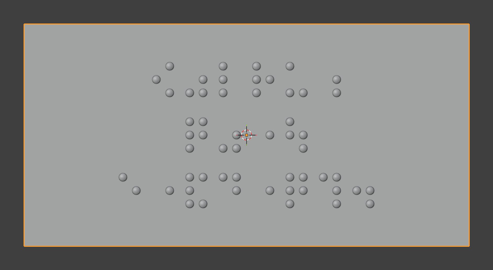
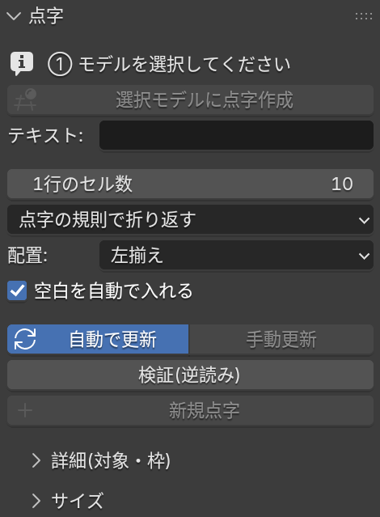
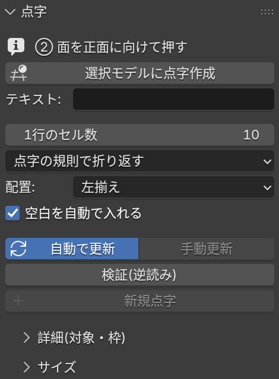
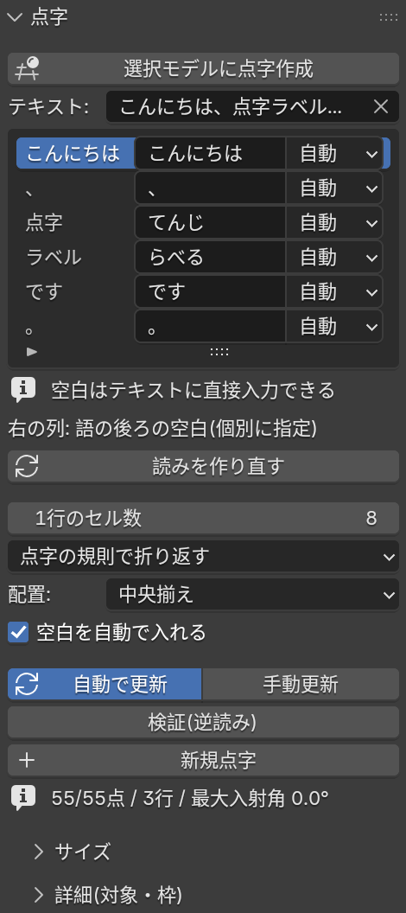
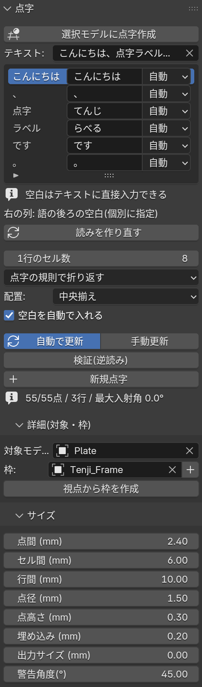
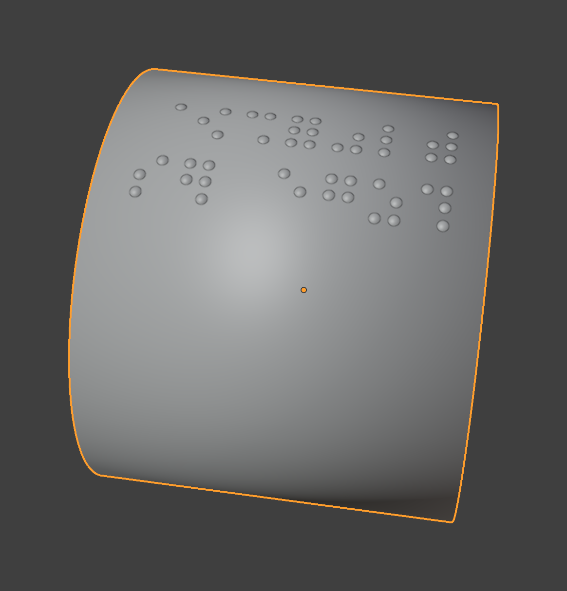
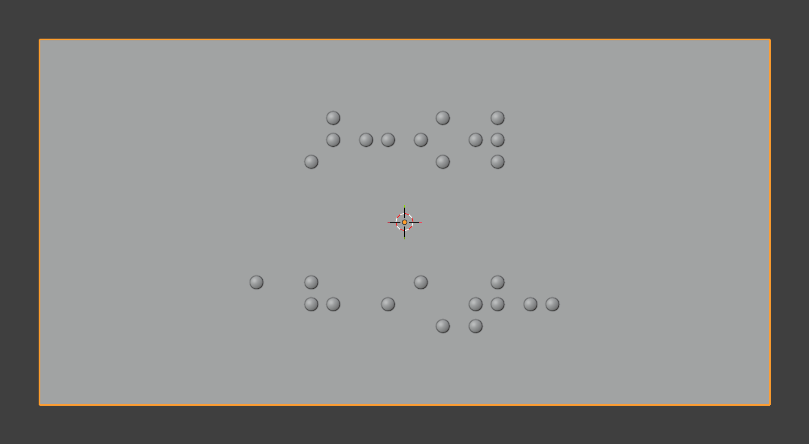

1. できること
Tenji Braille は、入力した日本語を日本語点字(6点点字)に変換し、Blender で選択した3Dモデルの表面に、点(半球状のドット)として載せる拡張機能です。 点字ラベルや触って分かる案内表示の、3Dプリント用モデルを作る用途を想定しています。
- テキストを入力するたびに、分かち書き → 点字への変換 → モデル上の点の生成を自動でやり直します。モデルに載せた状態を見ながら、文章や空白を調整できます。
- 点字の規則は、文部科学省「点字表記法」(第6章第3節)に基づいています(句読点、括弧、数符、外字符、つなぎ符など)。
- 点の間隔・大きさ・高さは、JIS の標準寸法を既定値として、自由に変えられます。3Dプリントの出力サイズに合わせた換算もできます。
- 生成した点が、本当にその点字になっているかを、メッシュから読み戻して確かめる「検証(逆読み)」があります。

2. インストール
2.1 必要なもの
- Blender 5.2 以降(動作確認は Blender 5.2.1 LTS・macOS のみです。Windows / Linux や、ほかのバージョンでは確認していません)。
- インターネット接続は不要です。このアドオンは通信を行いません。
2.2 zip ファイルからインストールする
- 上の「tenji_braille-0.1.0.zip をダウンロード」で、zip ファイルを保存します(解凍はしません)。
- Blender を起動し、メニューの Edit → Preferences を開きます。
- 左の一覧から Get Extensions を選びます。
- 画面右上の ▽(下向き矢印)のメニューから Install from Disk… を選び、保存した zip ファイルを指定します。
- インストールすると、拡張機能の一覧に Tenji Braille が現れます。チェックが入っていれば有効です(入っていなければ、チェックを入れます)。
- 3Dビューの上にマウスを置いて N キーを押すと、右側にサイドバーが開きます。タブの中に Tenji があれば、準備完了です。
2.3 更新とアンインストール
- 更新: 新しい zip を同じ手順でインストールすると、置き換わります(Blender の再起動が必要になることがあります)。
- アンインストール: Edit → Preferences → Get Extensions で Tenji Braille を選び、削除(Uninstall)します。作成済みの点字のメッシュは、通常のオブジェクトとして .blend ファイルに残ります。
3. 使い方(基本の流れ)
パネルの一番上に、次にやることが案内として表示されます。
- 点字を載せたいモデルを選択する。メッシュのオブジェクトを、クリックで選びます。選択していないうちは、「選択モデルに点字作成」ボタンは灰色で、押せません。


左: 何も選択していない状態。右: モデルを選択した状態。 - 点字を載せたい面を、正面に向ける。3Dビューを回して、載せたい面をまっすぐ見る向きにします。画面の中央が、点字を置く場所になります。 (上から載せるなら、テンキーの 7 で真上からの視点にします。)
- 「選択モデルに点字作成」を押す。選択中のモデルが対象になり、いま見ている向きに合わせて、点字を載せる位置と向きが決まります。 画面の右が読む方向、下が次の行、奥の面に向かって点が載ります。
- テキストを入力する。「テキスト」の欄に日本語を入力すると、入力に合わせて点字がモデルの上に作られます。

入力後のパネル。語ごとに読みと「後ろの空白」が一覧され、下に生成の結果が出る。 - 調整する。モデルの上の点字を見ながら、テキストや空白、1行のセル数などを変えます(変えるたびに、自動で作り直されます)。 読みが違う語は、一覧の「読み」の欄を直接書き換えます。位置を変えたいときは、3Dビューを動かして「選択モデルに点字作成」を押し直します。
- 確かめる。「検証(逆読み)」を押すと、生成した点から点字を読み戻し、期待どおりかを確認できます(結果はパネルに出ます)。
- 仕上げる。点字は、通常のメッシュ(
Tenji_Dots)として作られます。モデルと一体にしたり、STL などで書き出したりするのは、Blender の通常の操作で行ってください(このアドオンは書き出し機能を持ちません)。 続けて別の点字を作る場合は、先に「新規点字」を押します(複数のラベルを作る)。
4. パネルの説明
サイドバーの Tenji タブにある「点字」パネルの項目です。
| 項目 | 説明 |
|---|---|
| 選択モデルに点字作成 | 選択中のメッシュを対象にして、いま見ている向き・画面中央の位置に、点字を載せる枠を作ります。押し直すと、いまの点字がその場所へ移ります。メッシュを選択しているときだけ押せます。 |
| テキスト | 点字にする日本語。入力するたびに更新されます。改行は段落の区切りになり、2マス空けて始まります。 |
| 語の一覧 | テキストを語に区切った結果。左から「元の語」「読み」「後ろの空白」。読みは書き換えられます。「後ろの空白」は、自動 / なし / 1マス / 2マスから選びます(詳しくは)。 |
| 読みを作り直す | テキストから語の一覧を作り直します。手で直した読みと空白の指定は、すべてリセットされます。 |
| 1行のセル数 | 1行に並べる点字のマス(セル)の数。 |
| 折り返し | 「点字の規則で折り返す」(既定)または「1行のセル数で並べる」(詳しくは)。 |
| 配置 | 「左揃え」: 点字ブロックの左上を、枠の位置に合わせます。「中央揃え」: ブロックの中心を、枠の位置に合わせます(行数や文字数が変わっても中心が動きません)。「選択モデルに点字作成」を押すと「中央揃え」になります。 |
| 空白を自動で入れる | オン(既定): 点字の規則に従って、分かち書きの空白を自動で入れます。オフ: テキストに自分で入れた空白だけを使います。 |
| 自動で更新 | オン(既定): テキストや設定を変えるたび、枠やモデルを動かすたびに、点を作り直します。オフにすると、「手動更新」を押したときだけ更新されます。 |
| 手動更新 | いまの設定で、点を作り直します。 |
| 検証(逆読み) | 生成した点のメッシュから点字を読み戻して、期待どおりか確認します。一致すれば「OK」と点字が、点が欠けているなどで違えば「不一致」と表示されます。 |
| 新規点字 | いまの点字を確定して(通常のメッシュ Tenji_Label として残して)、テキストを空にし、新しい点字を作り始めます。 |
| 詳細(対象・枠) | 対象のモデルと、点字を載せる枠(Empty、名前は Tenji_Frame)を、直接指定する欄。通常は「選択モデルに点字作成」が自動で設定するので、触る必要はありません。 |
| サイズ | 点字の寸法の設定(下の表)。 |

| 項目 | 既定値 | 説明 |
|---|---|---|
| 点間 | 2.4 | 1つのセルの中で、隣り合う点の中心間の距離。 |
| セル間 | 6.0 | 隣り合うセルの、左上の点どうしの距離。 |
| 行間 | 10.0 | 隣り合う行の、上の点どうしの距離。 |
| 点径 | 1.5 | 点(半球)の底の直径。 |
| 点高さ | 0.3 | 点の高さ。触ったときの感触を考えて、低めの値にしてあります。印刷条件や好みで調整してください。 |
| 埋め込み | 0.2 | 点を、モデルの表面より下へ潜らせる深さ。曲面で、点とモデルの間にすき間ができないようにします。 |
| 出力サイズ | 0(無効) | 対象モデルの最長辺を、印刷したときに何 mm にするか(詳しくは)。 |
| 警告角度 | 45° | モデルの表面が点字の向きに対してこの角度より傾いている点を、「急斜面」として数えて警告します。 |
寸法の既定値(点間 2.4 mm、セル間 6.0 mm)は、日本の点字の標準的な寸法です。点径・高さ・行間・埋め込みは、このアドオンでの目安の値です。
5. 空白(分かち書き)と読みの調整
点字では、語の区切りに1マスの空白を入れます(分かち書き)。このアドオンは、形態素解析で語の区切りを決めて、点字の規則に従って空白を自動で入れますが、 解析は完全ではなく、また、モデルの大きさによって、空白を入れる・入れないで見た目が大きく変わります。次の方法で調整できます。
5.1 テキストに空白を直接入力する(基本)
テキストの好きな位置に空白を入力すると、入力した数のマスの空白になります(規則で入る自動の空白には足されません)。空白を入れなかった場所は、規則で自動に決まります。
5.2 空白を自動で入れない
「空白を自動で入れる」をオフにすると、テキストに入力した空白だけが使われます。短いラベルで、空白を自分で全部決めたいときに向いています。
5.3 語ごとに指定する
語の一覧の右の列(「後ろの空白」)で、その語の後ろの空白を、自動 / なし / 1マス / 2マスから選べます。テキストへの入力より優先されます。
5.4 読みを直す
漢字の読みは辞書(Janome)で決めるため、間違うことがあります。語の一覧の「読み」の欄を直接書き換えると、その読みで点字になります (ひらがなで入力します)。読みの欄に空白を入れると、語の途中でも区切れます。テキストを編集しても、直した読みは、同じ語に引き継がれます。
6. 折り返し
1行のセル数に収まらない文章は、複数の行に分けます。分け方は2通りから選べます(既定は「点字の規則で折り返す」)。
- 点字の規則で折り返す: 語を行にまたがせません。1行に収まらない長い語は、音節で切って、行末に「ー」を付けて次の行に続けます。
- 1行のセル数で並べる: セルを左から順に並べ、1行のセル数に達したら折り返します(語の途中でも折り返し、「ー」は付けません)。濁点などの前置符号は、本字と離しません。行頭には空白を置きません。
7. サイズと3Dプリント
7.1 単位の考え方
「サイズ」の寸法は mm で指定します。Blender のシーンの単位に応じて、次のように換算されます。
- 出力サイズが 0(既定): シーンの単位に従います。シーンの単位を「ミリメートル」(Scene Properties の Units で、Unit Scale を 0.001、Length を Millimeters)にしておくと、1 Blender 単位 = 1 mm になり、モデルの寸法がそのまま mm になります。
- 出力サイズを指定する: 対象モデルの最長辺が、印刷したときに何 mm になるかを入力します。モデルの大きさ(Blender 単位)がいくつでも、点字は、印刷後に指定の寸法(点間 2.4 mm など)になるように作られます。 3Dプリンターに出すときにモデルを拡大・縮小する場合に便利です。
7.2 点の高さ
点高さの既定値は 0.3 mm です。触ったときの感触を考えて、低めにしてあります。プリンターの積層ピッチや、使う人の好みに合わせて調整してください。
7.3 モデルと一体にする・書き出す
点は、モデルの表面に 0.2 mm 埋め込まれた状態で作られます。結合(Ctrl+J)やブーリアン演算で、モデルと一体にしてから、STL などで書き出してください。書き出しは Blender の標準機能を使います。
8. 曲面に載せる
点は、視点の向きに沿って、モデルの表面に載ります(各点の位置を、表面に射影します)。点の根元は、その場所の表面に合わせて傾きます。

- 向いているのは、平面〜緩やかな曲面です。球のように強く曲がった面や、端に近い面では、点の間隔が縮んで読みにくくなります。
- モデルの面の傾きが「警告角度」を超える点は、パネルに「急斜面」として数が表示されます。
- 強い曲面に載せたいときは、まず平面(または平面に近い面)に点字を作ってから、Blender の Bend などで、点字のメッシュごとモデルの形に曲げることをお勧めします。
9. 複数のラベルを作る
点字を作っている間は、1つの「作業中の点字」(Tenji_Dots)だけを更新します。別のラベルを作りたいときは、「新規点字」を押します。
- 1つ目の点字ができたら、「新規点字」を押します。いまの点字は、通常のメッシュ
Tenji_Labelとして残り、テキストが空になります。 - 3Dビューを動かして、次に載せる場所を中央にし、「選択モデルに点字作成」を押します(または、枠の Empty を動かします)。
- テキストを入力します。

確定した Tenji_Label は通常のメッシュなので、あとから、このアドオンでテキストを編集し直すことはできません。やり直すときは、オブジェクトを削除して、作り直してください。
10. 対応している点字
| 種類 | 入力 | 点字 | 備考 |
|---|---|---|---|
| かな | こんにちは | ||
| ありがとう | |||
| ぱぴぷぺぽ | 半濁音 | ||
| 濁音・拗音・促音・長音 | 学校 | 濁音・促音(「がっこー」) | |
| きょうと | 拗音 | ||
| 東京 | 長音(「とーきょー」) | ||
| ラーメン | |||
| 助詞の読み | 私は学校へ行く | 「は」→「わ」、「へ」→「え」 | |
| 数字(数符) | 100円 | ||
| 3個 | |||
| 3らしい | 数字の後ろのア行・ラ行はつなぎ符 | ||
| 英字(外字符・大文字符) | ABC | ||
| NHKの番組 | 英字の連続は大文字符を2つ | ||
| X線 | 英字の後ろの仮名はつなぎ符 | ||
| DOS/V | スラッシュ | ||
| 句読点・疑問符・感嘆符 | はい、そうです。 | ||
| 本当ですか？そうです。 | |||
| やった！ | |||
| 東大寺・春日大社 | 中点 | ||
| 括弧 | 「こんにちは」 | かぎ括弧 | |
| 先生は、「みんなの前で話すときは『伝えよう』が大切です。」と言った。 | 入れ子(ふたえかぎ) | ||
| （注） | かっこ | ||
| 〈こんにちは。〉 | 第2かぎ | ||
| 記号 | 20％引き | パーセント | |
| Q&A | アンド | ||
| ＊11は短縮番号 | アスタリスク | ||
| 「＃点字」 | ナンバー | ||
| 5個＠200円 | アット | ||
| 範囲・矢印・数字の伏せ字 | 10時～12時 | 波線 | |
| 東京8時→長野10時 | 矢印 | ||
| 20××年 | 数字の伏せ字 | ||
| 内線1××4番 | |||
| 点線・棒線 | そして…。 | 点線 | |
| のれんに腕押し――糠に釘 | 棒線 |
規則の根拠は、文部科学省「点字表記法」(第6章第3節)です。表の点字は、このアドオンでの変換結果です。
対応していないもの
- 英語点字(英語の文章の点字表記)。日本語の文章に含まれる英字・数字の表記(外字符・数符)にだけ対応しています。
- 空欄符号、強調の指示符、段落挿入符、小見出し符、点訳挿入符など、試験問題や書籍の点訳で使う符号。
- ○△□×の伏せ字(数字の伏せ字「×」だけ、対応しています)。
- 文脈で書き方が変わるもの。日付の略記(1/23 など)は「1月23日」のようには書き換えず、スラッシュのまま点字になります。地名の段階の区切り(東京・神田)も、空白への読み替えはせず、中点のまま点字になります。
11. 困ったときは
| 症状 | 確認すること |
|---|---|
| 「選択モデルに点字作成」が押せない | 3Dビューで、メッシュのオブジェクトを選択してください(点字のオブジェクト Tenji_*、空のオブジェクト(Empty)、カメラなどでは押せません)。 |
| 点字が作られない | パネルの案内(①②③)を確認してください。テキストが空のとき、また、枠をまだ作っていないときは、何も作られません。「自動で更新」がオフなら、「手動更新」を押してください。 |
| 「モデルに当たらない点」と出る | 点字ブロックが、モデルの面からはみ出しています。文章を短くする、1行のセル数を減らす、行間やセル間を小さくする、載せる位置をずらす、のいずれかで調整してください。 |
| 点字が裏返っている・向きが違う | 点字は、「選択モデルに点字作成」を押したときの視点に合わせて、画面の右へ向かって読む向きに作られます。載せたい面を正面から見て押し直してください。 |
| 読みが違う | 語の一覧の「読み」の欄を、ひらがなで直接書き換えてください。 |
| 語の途中に空白が入る(例: 「がっ こう」) | 辞書による語の区切りが不自然になっています。語の一覧で、その語の「後ろの空白」を「なし」にしてください。ひらがなだけの文章で起こりやすいです。 |
| 空白の入り方を変えたい | 5. 空白(分かち書き)と読みの調整を参照してください。 |
| 点のまわりがちらついたり、ざらついて見える | Blender の3Dビューの描画の精度の問題で、データには影響しません。サイドバーの View タブで、Clip Start を大きく(例: 10〜30)、Clip End を小さく(例: 500)すると改善します。ミリメートル単位のシーンで、モデルから離れて見ているときに起こりやすい現象です。 |
| 逆読みが「不一致」になる | 点が一部欠けていることが主な原因です(「モデルに当たらない点」を確認してください)。確定したあとに、モデルや点字のメッシュを手で動かした場合も、一致しなくなります。 |
| 操作が重い | 点の数が非常に多い場合や、ポリゴン数の多いモデルでは、更新に時間がかかることがあります。「自動で更新」をオフにして、必要なときだけ「手動更新」を押してください。 |
12. 制限事項
- 動作確認は、Blender 5.2.1 LTS(macOS)だけです。
- 実際の3Dプリントでの確認は、これからです。
- 強い曲面では、点の間隔が縮みます(曲面に載せる)。
- 1つのシーンで、作業中の点字は1つです。複数のラベルは、「新規点字」で確定しながら作ります。
- 確定した点字は、テキストを再編集できません。
- 日本語点字のみ対応しています。
- 分かち書き(語の区切り)は、辞書による自動判定で、不完全です。特に、ひらがなだけの語は、区切りが不自然になり、語の途中に余分な空白が入ることがあります(例: 「がっこう」が「がっ こう」になる)。また、「お」「第」などの接頭語の後ろに空白が入ることがあります。そのようなときは、語の一覧で「後ろの空白」を「なし」にするか、「空白を自動で入れる」をオフにして空白を自分で入力してください(5. 空白の調整)。漢字かな交じりの文章のほうが、区切りが安定します。
13. ライセンス・第三者ソフトウェア
- Tenji Braille は、GNU General Public License バージョン2以降(GPL-2.0-or-later)で提供されます。無償で利用でき、ライセンスの条件の範囲で、改変・再配布できます。ライセンス全文は、zip の中の
LICENSE、およびリポジトリにあります。 - 形態素解析に、Janome 0.5.0(Apache License 2.0)を同梱しています。辞書は、mecab-ipadic-2.7.0-20070801(奈良先端科学技術大学院大学・ICOT の著作物)のデータを含みます。ライセンス全文と注意書きは、zip の中の
THIRD_PARTY/にあります。 - 点字の規則は、文部科学省「点字表記法」に基づいています。
ソースコード・不具合の報告・ご意見: https://github.com/ssssrabbit/tenjipfab(blender/ ディレクトリ)。